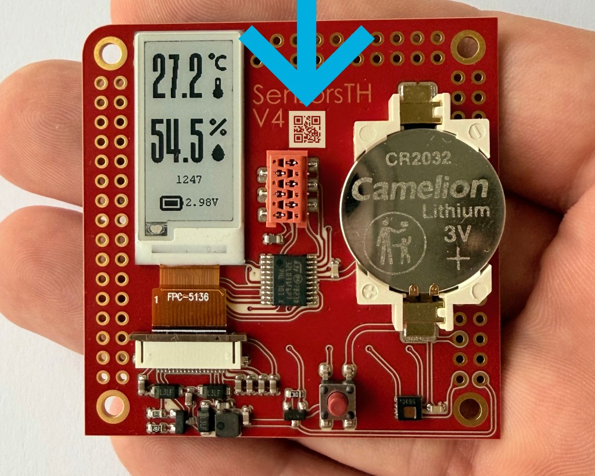

Assemblables is a free plugin for KiCad, Altium Designer, and other PCB design tools that creates QR-codes with the assembly data for the PCB. Place the QR-code on the board, and the auxiliary assembly data will always stay with the physical board.
Scanning the QR-code opens the documentation for that specific board and revision.
The published package can include:
The QR code provides a direct connection between a physical PCB and its assembly data. It helps engineers distinguish board revisions and gives R&D and assembly teams a shared reference without relying on filenames or separate document folders.
A technician can scan the board to check component values, placement, and available layer data. Copper layers and nets can also help trace and reconstruct damaged connections.
Assemblables enables a pick-and-place machine to identify a board, retrieve its assembly data, and begin component placement without manual intervention.
The assembly data also includes the QR code's position and dimensions, allowing the machine to use it as an initial reference for board alignment.
QR codes use the short WWW.ASMB.IO/unique_id format to keep the printed code compact. Links are unlisted by default: search engines do not index them, and access requires the direct URL.
There are several suffixes to access different types of assembly data